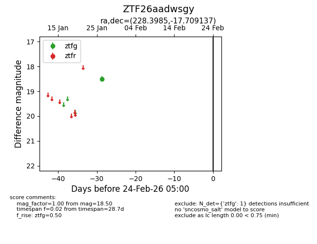
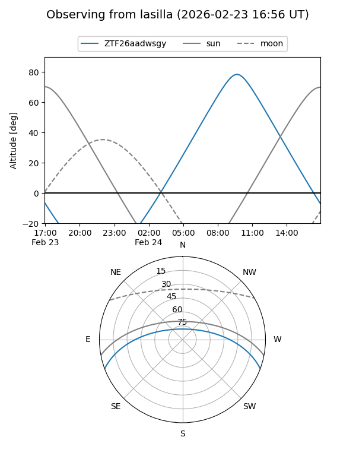
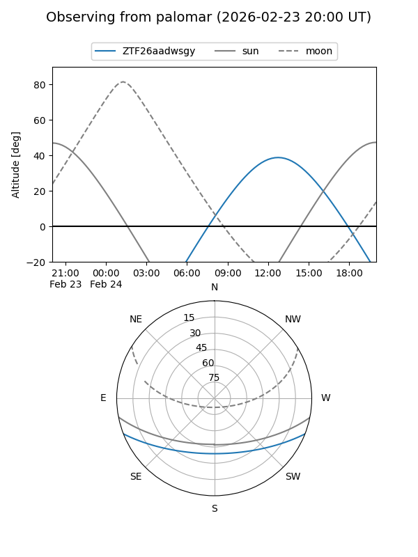

ZTF26aadwsgy
Target ZTF26aadwsgy at 2026-01-28 14:01
Aliases and brokers:
FINK: link
Lasair: link
ALeRCE: link
alt names
ZTF26aadwsgy (ztf,fink_ztf)
Coordinates:
equatorial (ra, dec) = 228.3985,-17.70914
equatorial (HMS+DMS) = 15:13:35.65,-17:42:32.89
galactic (l, b) = (344.5083,+33.44797)
Flags:
Photometry:
last ztfg=18.50
1 ztfg detections
Lightcurve

Visibility


Additional plots